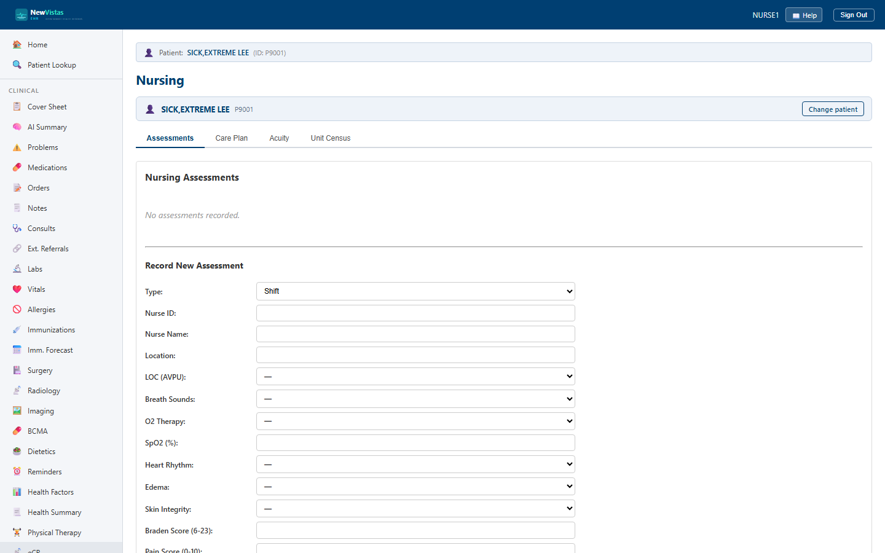

Nursing Assessment
Document a head-to-toe assessment across every body system, with built-in Braden (pressure-injury) and Morse (fall) risk scoring, then sign it to finalize the record. The screen has four tabs: Assessments, Care Plan, Acuity, and Unit Census.
Open the Nursing screen
- In the sidebar, under Nursing, click Nursing (or go to
/nursing). - In the Patient ID field, type the patient ID (e.g.
16). - Click Load Patient. The page loads with four tabs; if no prior assessments exist, the Assessments tab shows "No assessments recorded."

Record a new assessment
On the Assessments tab, scroll to the "Record New
Assessment" section. Choose the assessment Type for the
situation — Initial on admission, Shift at the
start of a shift, Focused for a single system, or
PRN for an unscheduled event.
- Set Type, Nurse ID (e.g.
NURSE1), Nurse Name (e.g.JOHNSON,MARY R), and Location. - Document the body systems — LOC (AVPU), Breath Sounds, O2 Therapy, SpO2, Heart Rhythm, Edema, Skin Integrity, Bowel Sounds, Appetite, Urine Output, Foley Catheter, Anxiety, Mood, and Mobility.
- Enter the risk scores — Braden Score (6–23), Pain Score (0–10) with location, Morse Score (0–125), and Fall Risk.
- Type the Narrative Notes summarizing your findings.
- Click Record Assessment.
A green banner confirms the save and the new row appears at the top of the Assessments table showing date/time, type, nurse, status, and the Pain, Morse, and Braden scores. Click any row to expand a detail card with every documented field; fields you left blank show "--".
Focused assessment you only document the relevant system
(e.g. respiratory) and leave the rest at "--". The detail view makes it
clear which systems were assessed and which were not.
Risk scoring at a glance
The system labels the Morse fall score with its risk band right in the detail view (e.g. "35 — Moderate"). Use these scales to interpret what you recorded:
| Braden (pressure injury) | Risk | Morse (fall) | Risk |
|---|---|---|---|
| 19–23 | No risk | 0–24 | Low |
| 15–18 | Mild | 25–50 | Moderate |
| 13–14 | Moderate | 51+ | High |
| 10–12 | High | ||
| 6–9 | Very high |
AVPU level of consciousness runs Alert → Verbal → Pain → Unresponsive. A finding of Pain or Unresponsive is a critical change worth escalating.
Sign an assessment
A new assessment is saved as a Draft. Signing finalizes it.
- In the Assessments table, click the row for the assessment you want to finalize.
- In the expanded detail card, confirm the Status shows Draft.
- Click Sign Assessment (this button only appears while the status is Draft).
The detail reloads, the status changes from Draft to Signed, and the Sign button disappears. The table row updates to show Status: Signed.
Pain, SpO2 in the 80s, a Braden of 12, or a Morse of 85 — is a
rapid-response situation. Document it, but make sure the provider is at the
bedside; the record supplements escalation, it doesn't replace it.